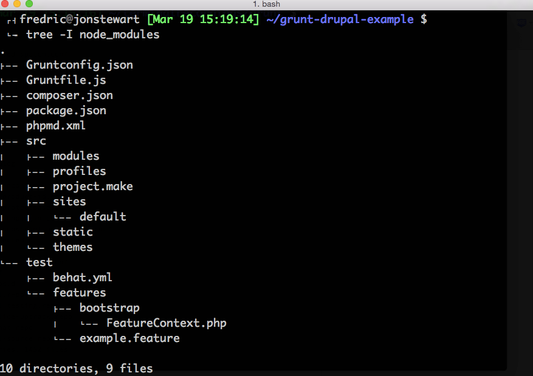
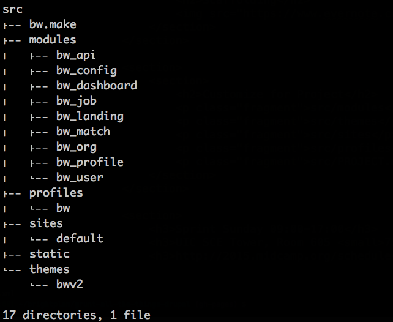
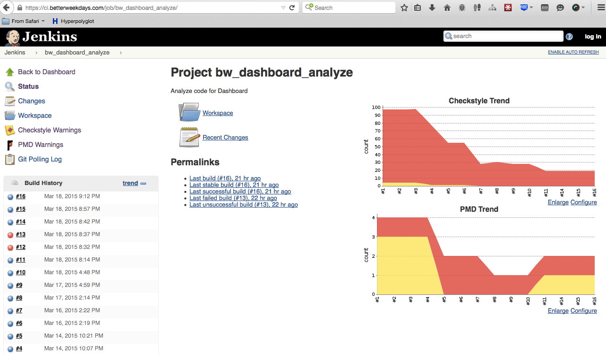
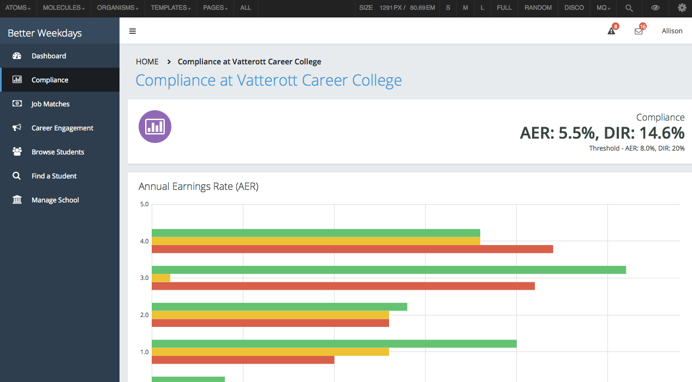
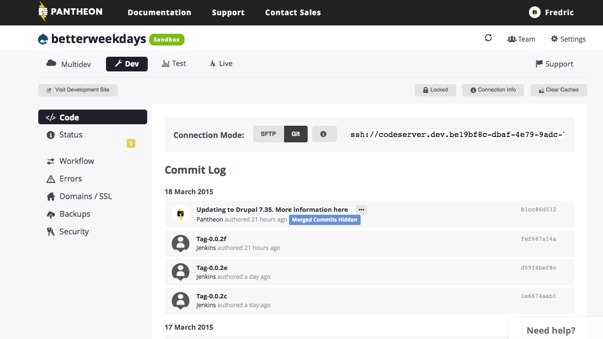

#MidCamp
Grunt All the Things!! Even Drupal! /
Grunt All the Things!! Even Drupal!
http://bit.ly/grunt-dp-things
MidCamp 2015
#MidCamp
Assumptions
- Learn something new
- Show Me the Code!
- Written something with Javascript
- Integrate best practices
Better Weekdays
V.P. of Engineering

Better Weekdays
http://betterweekdays.com

Building Making Drupal
Drush make
http://www.drush.org/en/master/make/
Simplify
Keep contrib out of version control
Use external libraries
Transparency
Declarative builds
Easily reproduce
Log output
Improve Quality
Test. Test. Test.
Development standards
Track metrics
Grunt
http://gruntjs.com/
A Javascript Task Runner
Why?
Automation
Simple Node.js requirement
Lots of plugins
How?
npm install -g grunt-cli
Gruntfile.js, Gruntconfig.json
Grunt Drupal Tasks
https://github.com/phase2/grunt-drupal-tasks
Make, PHPCS, Behat

Scaffolding
Customize for Project
src/modules
src/themes
src/sites
src/profiles
src/PROJECT.make
src
Edit Gruntconfig.json
Make sure srcPaths > make points to right make file
src/PROJECT.make
Core version
Contrib module, release number, patches
External libraries
Time to build!

Validate and Check for Errors
Sniff the code
Automation has Power
Makes our site portable, shareable
Reviewing VCS history is 'easier'
Connect it to other processes
CI: Jenkins
Client-side: SASS, Pattern Lab
Deploy: Pantheon
Extending Gruntfile.js
grunt-shell example
// Patternlab, Pantheon shell commands
grunt.extendConfig({
shell: {
bower_install: {
command: "bower install"
},
patternlab_build: {
command: "cd patternlab; grunt build; php core/builder.php -g"
},
patternlab_watch: {
command: "php patternlab/core/builder.php -gp"
},
pantheon_clean: {
command: [
'cd <%= config.buildPaths.pantheon %>',
'rm -Rf sites/all/',
'rm -Rf profiles/mskcfs'
].join('&&')
},
pantheon: {
command: [
'cd <%= config.buildPaths.pantheon %>',
'git add -A *',
'git commit -m "<%= grunt.option("message") %>"',
'git push origin master'
].join('&&')
}
}
});
Bonus!
Static Prototyping and KDS: http://bit.ly/p2-kds
KDS Make: https://github.com/fmitchell/KDS-make
Questions?
Sprint Sunday 09:00-17:00
UIC SCE Tower, Room 605 750 S. Halsted
http://2015.midcamp.org/schedule
Learn through contribution
Contributors of all skill sets and levels are welcome and encouraged.
Thank You!
Slides
http://bit.ly/grunt-dp-things
Feedback
https://joind.in/talk/view/13792